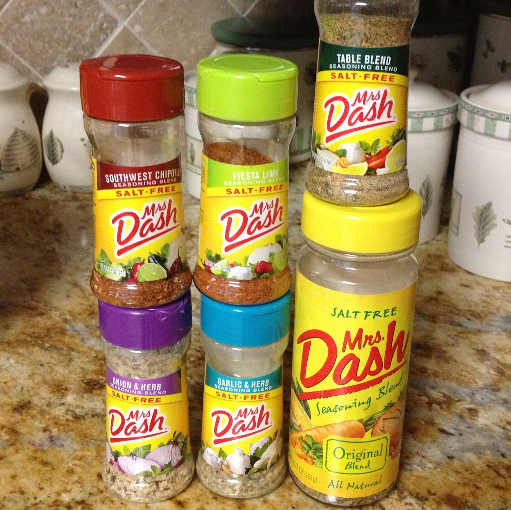
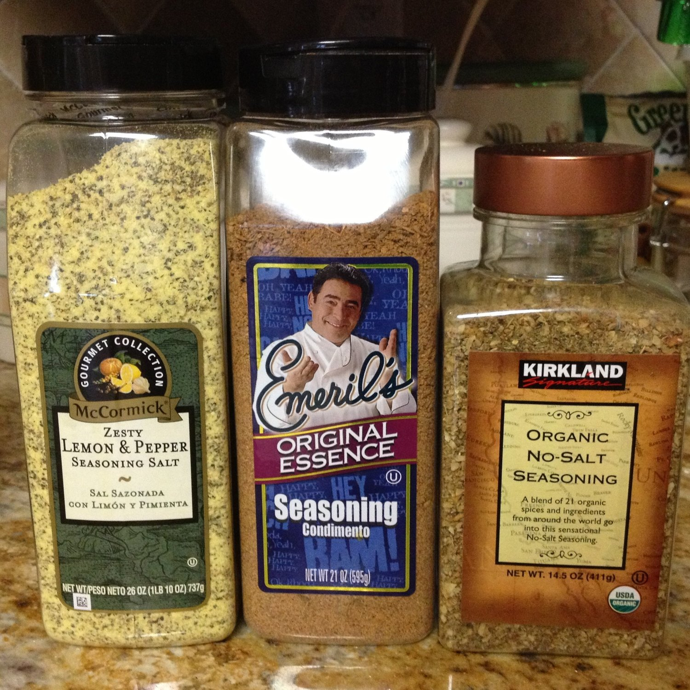
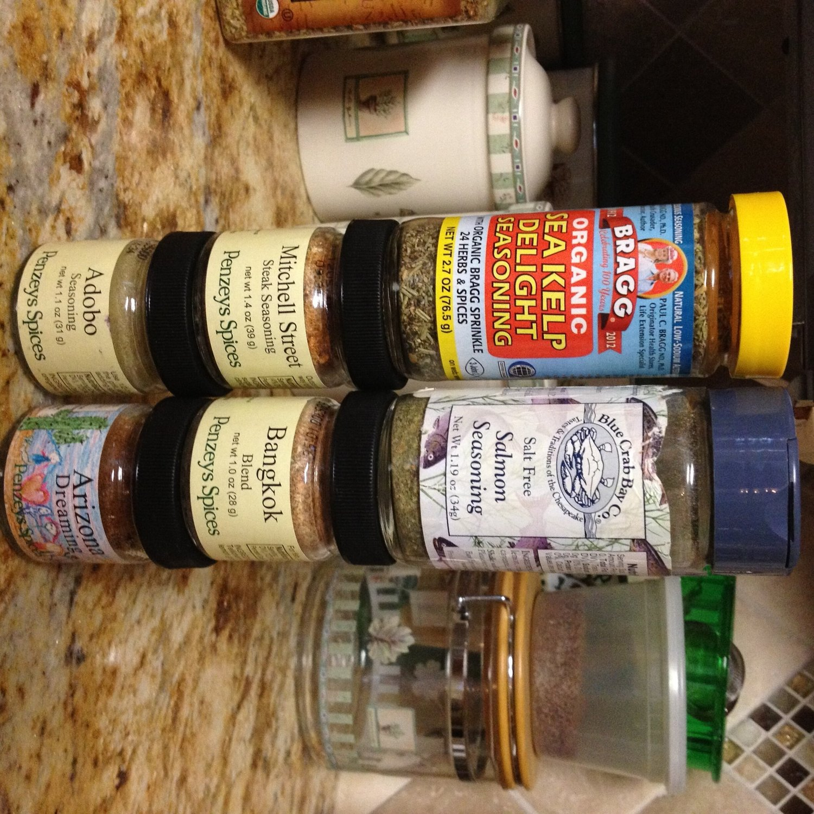

Adding excitement to "boring" food - Spices I use
If you follow me on Instagram, you'll notice that the food I prep and bring to class and such tends to look verrrrry similar. Baked chicken or turkey, steamed broccoli, steamed green beans, steamed brussel sprouts, spaghetti squash, avocado, etc etc blah blahhh. You get it. It CAN be pretty plain BUT. If you do it right, it's never boring! :) I love my lunches and midday meals and never get sick of them. I honestly look forward to them every single day. The trick is spices and healthy condiments! Forreal. Someone suggested I share what spices I use, so here it goes!
First, I love my condiments. I mostly use salsa and mustard because there's SO MANY FLAVORS and they're natural ingredients (if you get the right kinds)! I get so excited to find new flavors. I've got about 5 different salsas in my house and as for mustard, oh lordy. There's dijon mustard, stone ground mustard, fig mustard, Jack Daniels mustard, yellow mustard, spicy brown mustard, southwestern style mustard.... Is that it? ha. I also like to use sriracha or hot sauce for when I'm feeling like some spiciness. I also make homemade sauces from a blend of healthy ingredients, and I've made a separate post of those sauces! Of course, all of these condiments need to be portioned so that it's not excessive to the point where calories rack up without you noticing. You don't want more salsa than you have actual food ;)As for spices.... Let me just begin by professing my love for Ms. Dash. And any other multi-purpose seasoning for that matter. Sadly, I don't own them all. Yet. But I've got Southwestern Chipotle, Fiesta Lime, Garlic and Herb, Onion and Herb, Table Blend, and Original Blend. I love that they're all salt-free.

A few multipurpose seasonings I have in bulk are lemon pepper, Emeril's original essence, and an organic no-salt seasoning that's really unique and I can't put a flavor to. The organic seasoning is my FAVORITE that I own. I know it looks nearly full still, but I seriously drown my chicken in it when I bake it. It's so good, I don't know how there's so much left still haha. Unfortunately, the Emeril's blend and the lemon pepper blend have added salt so I use them sparingly.
Another one of my favorite spice brands is Penzey's Spices. If you check out their site, you'll see why. SO. MANY. I've got a ton, but out of those that I own, my favorites are Arizona Dreaming (a little spicy), Bangkok Blend (asian feel), Adobo seasoning, and Mitchell Street Steak seasoning. Most of the Penzey's I own are salt-free, except for the steak seasoning. Lastly, I often use Bragg's organic sea kelp delight seasoning. And I VERY OFTEN use a salt-free salmon seasoning that's dill-based. My second favorite spice that I have. It's awesome on stuff other than salmon - I liked to put it on my veggies. I found it at a random gift store on vacation, and I'm so scared for when I run out D;
AAAND after the pictures were taken, I tried out Frontier brand spices. They. Are. Amazing. I found them on iherb.com (use GIK407 for $10 off). They have a ton of salt-free seasonings to choose from. I bought taco seasoning (FAVORITE), mexican fiesta (NEXT FAVEEE), garlic bread, barbecue, blackened creole, thai spice, and more. They're all so good. So yeah, check those out!That's my collection of seasonings I use! With so many options, you can see why I never get tired of my food now. Flava cityyyy.